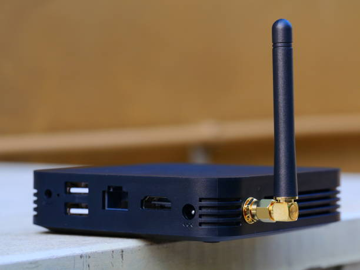
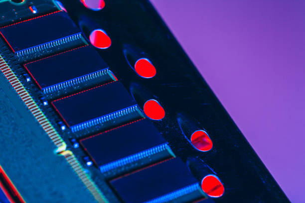
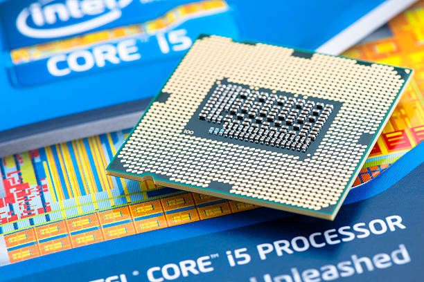

News
Advancements in Mini PC Technology
Applications of Compact Computing
Mini PC Impact on Computing Industry
About Us
Mini PC Azulle
What is the significance of mini PCs in compact computing?
Jun 13, 2024
The significance of mini PCs in compact computing cannot be understated.. These small yet powerful devices have revolutionized the way we think about technology and have opened up a world of possibilities for users looking to save space without sacrificing performance.
One of the key advantages of mini PCs is their size.

What is driving the trend towards smaller, more powerful computing devices?
Jun 13, 2024
In today's fast-paced world, the demand for smaller, more powerful computing devices is constantly on the rise.. This trend can be attributed to a number of factors that are driving the technology industry towards innovation and efficiency.
One of the key drivers behind the push for smaller, more powerful computing devices is the increasing need for portability and convenience.
What is the future outlook for mini PCs in the tech industry?
Jun 13, 2024
Mini PCs have been gaining popularity in the tech industry due to their compact size, energy efficiency, and versatility.. As technology continues to advance at a rapid pace, the future outlook for mini PCs looks promising.
One of the key trends driving the growth of mini PCs is the increasing demand for portable computing solutions.

What are the key features to look for in a high-quality mini PC?
Jun 13, 2024
When it comes to selecting a high-quality mini PC, there are several key features that you should look for to ensure that you are getting the best possible performance and value for your money.
One of the most important features to consider is the processor.. A powerful processor will ensure that your mini PC can handle demanding tasks such as video editing, gaming, or running multiple applications simultaneously without slowing down.

What is the impact of mini PCs on traditional desktop computers?
Jun 13, 2024
In recent years, the rise of mini PCs has had a significant impact on traditional desktop computers.. These compact and portable devices have revolutionized the way we think about computing, offering a smaller, more energy-efficient alternative to bulky desktops.
One of the most obvious impacts of mini PCs on traditional desktop computers is their size.
How to Revolutionize Your Workspace with Compact Computing: The Future of Mini PCs
Jun 13, 2024
In today's fast-paced and ever-evolving world, technology plays a crucial role in how we work and interact with our surroundings.. One of the latest trends in computing is the rise of mini PCs, which are revolutionizing the way we think about workspace design and efficiency.
Gone are the days when bulky desktop computers dominated office spaces, taking up valuable real estate and restricting mobility.
Discover the Secrets of Maximizing Efficiency with Mini PCs: The Ultimate Guide
Jun 13, 2024
In today's fast-paced world, efficiency is key.. Whether you're a student, a professional, or just someone looking to make the most of their time, finding ways to maximize efficiency is essential.
Unleash the Power of Small-Scale Technology: How to Embrace Compact Computing
Jun 13, 2024
In today's fast-paced world, we are constantly bombarded with information and technology that can sometimes feel overwhelming.. However, there is a growing movement towards embracing small-scale technology as a way to simplify our lives and make things more manageable.
Are You Ready for the Next Generation of PCs? Explore Mini PC Innovation Today!
Jun 13, 2024
Are you ready for the next generation of PCs?. With advancements in technology constantly pushing boundaries and exceeding expectations, it's time to explore the innovative world of mini PCs.
Gone are the days of clunky desktop towers taking up valuable space in your home or office.
Say Goodbye to Bulky Computers and Hello to Compact Computing: A Game-Changer in Technology
Jun 13, 2024
In a world where technology is constantly evolving, the way we use computers has also seen significant changes.. Gone are the days of bulky desktop computers that take up valuable space in our homes and offices.
The evolution of mini PCs and their increasing popularity in the tech industry
Jun 13, 2024
In recent years, mini PCs have experienced a significant evolution and have become increasingly popular in the tech industry.. These compact yet powerful computers offer a wide range of benefits and are now being embraced by both consumers and professionals alike.
One of the key factors driving the popularity of mini PCs is their small size.
The benefits of compact computing, such as space-saving design and energy efficiency
Jun 13, 2024
Compact computing, with its space-saving design and energy efficiency, offers a plethora of benefits that make it a desirable option in today's fast-paced world.. This innovative technology allows for the creation of smaller yet powerful devices that can fit seamlessly into any workspace or home environment.
One of the key advantages of compact computing is its ability to save valuable space.
Comparison of different mini PC models and brands available in the market
Jun 13, 2024
Mini PCs have become increasingly popular in recent years due to their compact size and powerful performance.. With so many different models and brands available in the market, it can be overwhelming to choose the right one for your needs.
Future trends in mini PC technology, including advancements in processing power and connectivity options
Jun 13, 2024
The future of mini PC technology is bright, with advancements in processing power and connectivity options paving the way for even more compact and efficient devices.. As we continue to push the boundaries of what is possible in computing, mini PCs are becoming more powerful and versatile than ever before.
One of the most exciting trends in mini PC technology is the increasing processing power that these tiny devices are capable of.
Practical uses for mini PCs in various settings, such as home entertainment systems, office workstations, and gaming setups
Jun 13, 2024
Mini PCs have quickly become a popular choice for those looking for a compact and versatile computing solution.. With their small size and powerful performance, they offer a range of practical uses in various settings.
One common use for mini PCs is as part of a home entertainment system.